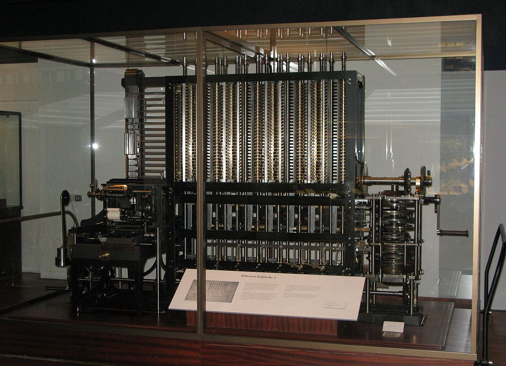

The first computers
Babbage's machines were among the first mechanical computers. That they were not actually completed was largely because of funding problems and clashes of personality. Babbage directed the building of some steam-powered machines that achieved some modest success, suggesting that calculations could be mechanised. For more than ten years he received government funding for his project, which amounted to £17,000, but eventually the Treasury lost confidence in him. While Babbage's machines were mechanical and unwieldy, their basic architecture was similar to a modern computer. The data and program memory were separated, operation was instruction-based, the control unit could make conditional jumps, and the machine had a separate I/O unit.
Babbage began in 1822 with what he called the difference engine, made to compute values of polynomial functions. It was created to calculate a series of values automatically. By using the method of finite differences, it was possible to avoid the need for multiplication and division. For a prototype difference engine, Babbage brought in Joseph Clement to implement the design, in 1823. Clement worked to high standards, but his machine tools were particularly elaborate. Under the standard terms of business of the time, he could charge for their construction, and would also own them. He and Babbage fell out over costs around 1831. Although Babbage received ample funding for the project, it was never completed. His design was finally constructed in 1989–1991, using his plans and 19th-century manufacturing tolerances. It performed its first calculation at the Science Museum, London, returning results to 31 digits.
This first difference engine would have been composed of around 25,000 parts, weighed fifteen tons (13,600 kg), and would have been 8 ft (2.4 m) tall.
After the attempt at making the first difference engine fell through, Babbage worked to design a more complex machine called the Analytical Engine. The Analytical Engine marks the transition from mechanised arithmetic to fully-fledged general purpose computation. It is largely on it that Babbage's standing as computer pioneer rests. The major innovation was that the Analytical Engine was to be programmed using punched cards: the Engine was intended to use loops of Jacquard's punched cards to control a mechanical calculator, which could use as input the results of preceding computations. The machine was also intended to employ several features subsequently used in modern computers, including sequential control, branching and looping. Although never built it would have the equivalent of 675 bytes of memory, and run at a clock speed of about 7 Hz.
Electronic computers (ENIAC)
ENIAC (/ˈɛniæk/; Electronic Numerical Integrator and Computer) was the first electronic general-purpose computer. It was digital and able to solve "a large class of numerical problems" through reprogramming. ENIAC was completed in 1945 and first put to work for practical purposes on December 10, 1945.
By the end of its operation in 1956, ENIAC contained 20,000 vacuum tubes; 7,200 crystal diodes; 1,500 relays; 70,000 resistors; 10,000 capacitors; and approximately 5,000,000 hand-soldered joints. It weighed more than 30 short tons (27 t), was roughly 2.4 m × 0.9 m × 30 m (8 ft × 3 ft × 98 ft) in size, occupied 167 m2 (1,800 sq ft) and consumed 150 kW of electricity. This power requirement led to the rumor that whenever the computer was switched on, lights in Philadelphia dimmed.
Unix and Main Frames
Unix History (under construction)
PC's
PC History under development